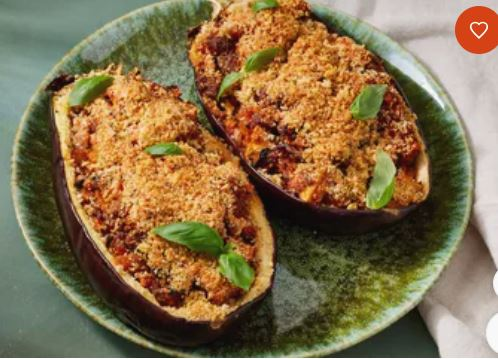

Lasagna RECIPES

Meat Lasagna Recipes
It is usually rectangular or ribbon shaped, thicker than tagliatelle, made from a dough based on flour and eggs,
with numerous local variants.
Ingredients
Steps
- The first thing that goes on the buttered tray is a layer of red sauce. This is so that nothing sticks to
the bottom.
- After that, add a smaller layer of white sauce.
- Then finally a layer of pasta.
- Repeat the process: red sauce, white sauce, pasta.